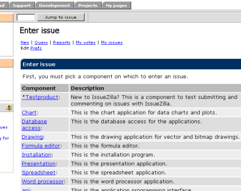
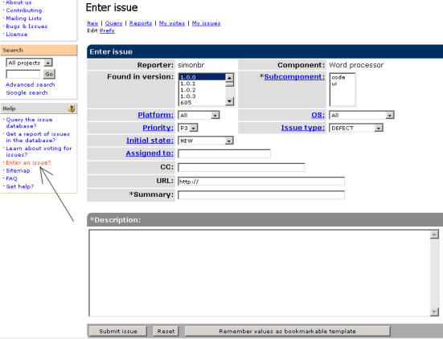
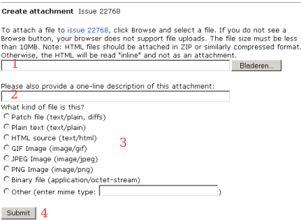

Bugs melden
Ook niet-programmeurs kunnen meehelpen om de
OpenOffice.org software te verbeteren, bijvoorbeeld door problemen te
melden aan de ontwikkelaars! Hier wordt doorgaans serieus op ingegaan,
en het is indrukwekkend om te zien hoeveel verbeteringen er op deze
manier al zijn aangebracht sinds de start van het project.
Wat is de Issue Tracker?
De Issue Tracker (voorheen Issuezilla) houdt bij
hoe de gemelde problemen worden opgelost. Deze pagina helpt je verder
op weg.
Het Engelse woord "issue" betekent in dit verband
"kwestie" of "probleem". Wanneer je in OpenOffice.org tegen iets
aanloopt, en je vermoedt dat dit voorkomt uit een fout of
onvolkomenheid in de software, kun je
een "issue" indienen. Je kunt ook suggesties doen voor verbeteringen om
bijvoorbeeld het gebruiksgemak te vergroten.
Wat heb je nodig?
De voertaal van de Issue Tracker is het Engels,
dus het helpt als je enige kennis van die taal hebt :)
Je moet je
geregistreerd hebben als gebruiker van OpenOffice.org.
Daardoor is je e-mailadres bij het systeem bekend, zodat
je op de hoogte wordt gehouden van de voortgang van jouw issue.
Je moet bovendien zijn aangemeld
(ingelogd). N.B. Je browser moet daarvoor cookies accepteren.
Zoeken naar een issue
Er is natuurlijk een behoorlijke kans dat iemand
anders hetzelfde probleem is tegengekomen en het ook al heeft
gerapporteerd. Het kan dan zijn dat het al opgelost is in de
eerstvolgende te verschijnen versie, of dat de issue een manier
vermeldt om het probleem te vermijden.
Om hierachter te komen is er de zoekpagina van de Issue Tracker.
Er wordt weleens geklaagd dat die er te ingewikkeld uit ziet. Met de
tot een minimum vereenvoudigde versie hieronder kom je echter ook een
heel eind!
Indienen van een issue
Als in het getoonde lijstje geen bugs worden beschreven die kennelijk
overeenkomen met jouw issue, kun je verder gaan door op "Enter New Issue" te klikken. Je
krijgt dan het volgende te zien:

Geef hierin aan op welk onderdeel van
OpenOffice.org je denkt dat het probleem betrekking heeft. Als je het
niet zeker weet is dat overigens niet erg! Kies gewoon wat er het meest
op lijkt. Hierna kun je de issue gaan invoeren:

Toelichting:
- Klik op de link "Help-Enter an Issue" (zie
pijl) voor meer informatie over het schrijven van een issue. Lees
bijvoorbeeld de "issue writing guidelines" voor het schrijven van een
goede issue.
- Found in version: Geef hier
de versie van OpenOffice.org aan waarop de issue betrekking heeft.
- Subcomponent: Geef hier de
subcomponent aan. Als je het niet weet, gokken!
- Platform: Kies hier het platform. Indien op
meerdere platforms van toepassing, kies dan "All".
- Priority: Geef de prioriteit
aan. Doorgaans kun je het best de standaardwaarde P3 laten staan en de
ontwikkelaars de prioriteit laten kiezen. Als je deze aan wilt passen,
klik dan eerst op de link om te lezen wat de betekenis van P1 t/m P5 is.
- OS: Geef het OS aan. Indien
onder meerdere beheerssystemen van toepassing, kun je hier ook "All"
kiezen.
- Issue type: Geef het soort
issue aan. Merk op dat DEFECT alleen van toepassing is als een
bestaande functie niet werkt zoals bedoeld. Specificeer FEATURE om
nieuwe functionaliteit te suggereren, en ENHANCEMENT als je vindt dat
een functie op een andere manier zou moeten werken.
- Summary: Geef hier met
weinig woorden zo duidelijk mogelijk aan waar de issue over gaat.
- Description: Geef hier zo
goed mogelijk uitleg over de issue. Probeer zoveel mogelijk informatie
te geven die voor de ontwikkelaars van belang kan zijn: aanwijzingen
hoe ze het probleem zelf kunnen oproepen, welke acties je hebt
uitgevoerd om erachter te kunnen komen waar het probleem precies ligt,
etc.
- Submit Issue: Klik op deze
knop om de issue te verzenden.
De overige velden hoeven in principe niet te worden aangepast.
Merk op: voordat je op de "Submit Issue"
knop klikt, verdient het aanbeveling om de beschrijving te kopiëren
naar een tekst editor of zo. Het komt namelijk soms voor dat je zoveel
tijd nodig hebt om de beschrijving te formuleren dat het systeem denkt
dat je weg bent en je heeft uitgelogd. Log dan opnieuw in, open opnieuw
een issue, kopieer de beschrijving terug, vul de rest van de velden in
en klik opnieuw op "commit".
Bestanden toevoegen aan de issue
Nadat je de issue hebt verzonden krijg je een
bevestiging te zien.
Hiermee ben je in principe klaar. Als je echter
een bestand hebt waarmee het probleem te demonstreren is, kun je dat nu
gaan uploaden door op de link "Attach a file to this issue" te klikken.
In dat geval zie je onderstaande:

Toelichting:
- Geef de padnaam van het bestand, of gebruik de
"Bladeren..." knop om het bestand via een dialoogvenster te selecteren.
- Geef een korte beschrijving van het bestand.
- Kies het type bestand. Als je het niet zeker
weet, kies dan "Binary File". Geef in dat geval in de beschrijving van
het bestand het type c.q. de extensie aan.
- Klik op deze knop om het bestand te verzenden.
Wat gebeurt er verder met de issue?
Je wordt automatisch via e-mail op de hoogte gehouden van de
ontwikkelingen. Als je later nog eens naar je issue wilt kijken of er
iets aan toevoegen, kun je na inloggen links in je browservenster op
"My Issues" klikken voor een overzicht.
Tenslotte nog dit:
Als je een Nederlandstalige build van OpenOffice
gebruikt, kan een beschrijving in het Engels problematisch zijn, omdat
het vaak niet voor de hand ligt hoe de menu's, dialogen etc. in het
Engels heten. Hiervoor kan de
Nederlands-Engels OpenOffice.org Glossary behulpzaam zijn.
Je kunt deze inladen in OpenOffice.org en de overeenkomstige Engelse
termen erin opzoeken.
|